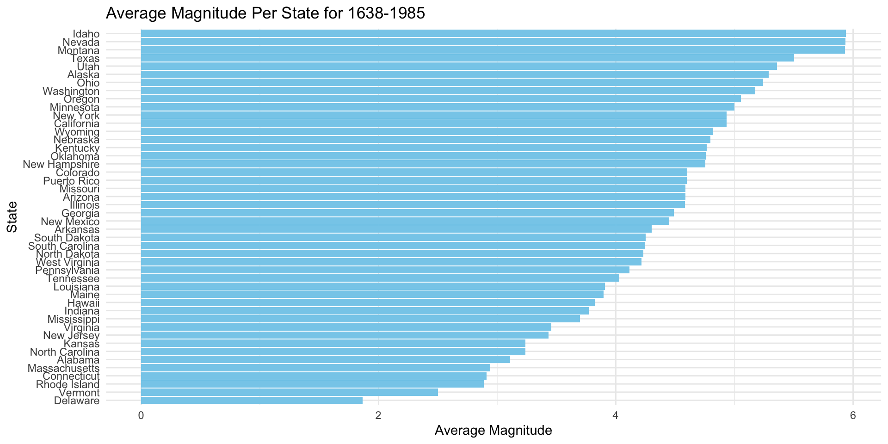
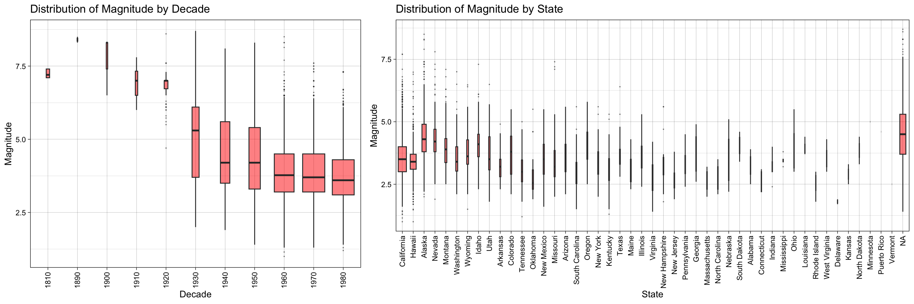
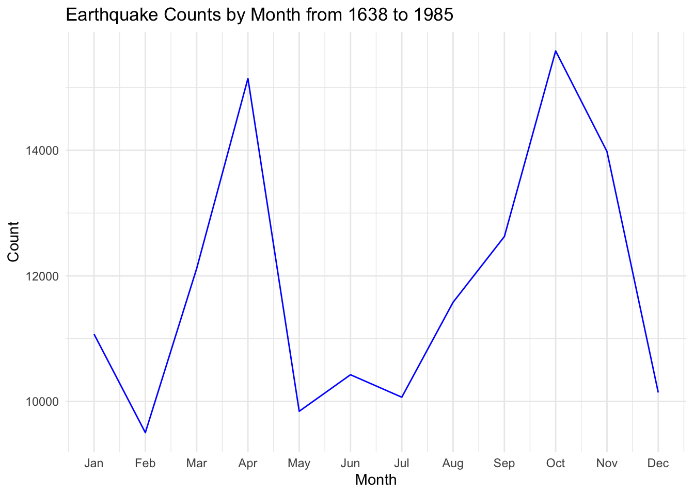
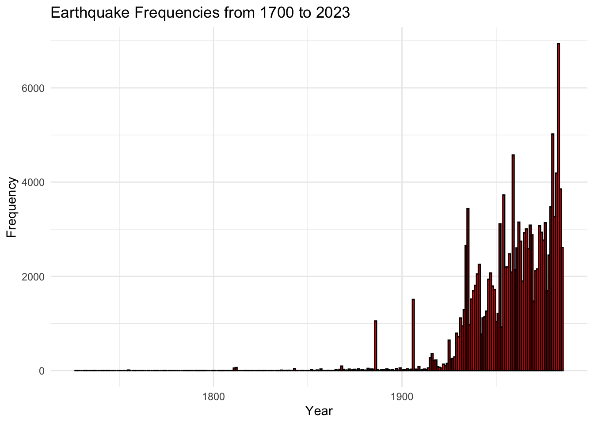
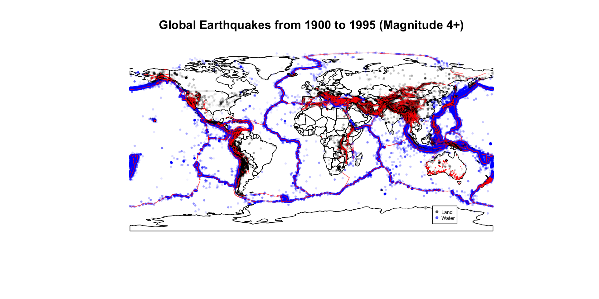
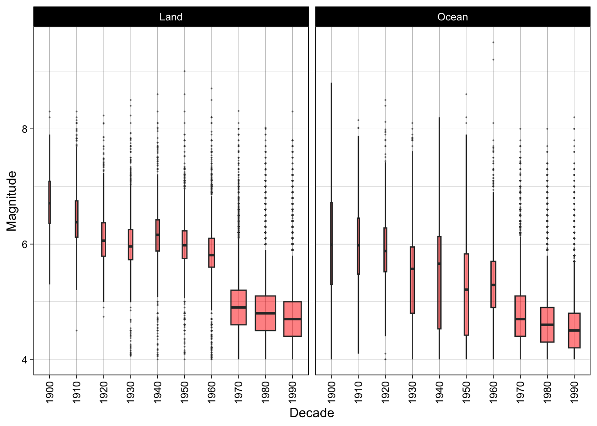
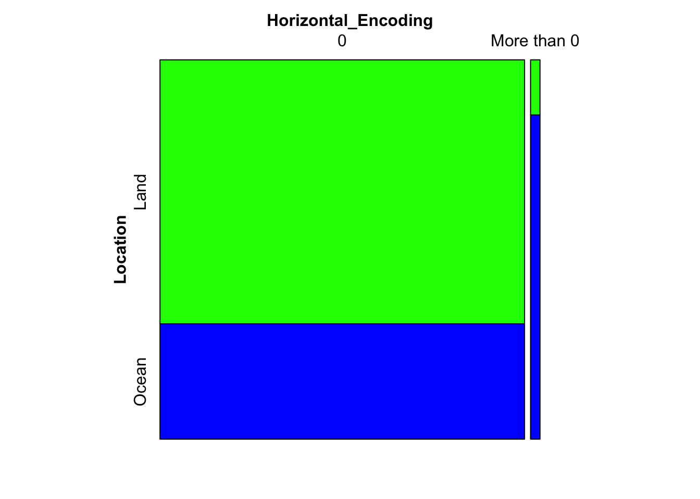

# Pivot the table so we have one row per year and state#| echo: falsepopulation_per_state <- state_pop %>%pivot_longer(cols =starts_with("x"),names_to ="year",values_to ="population") %>%arrange(State, year)# Display the updated data frame# population_per_state
3.1 Exploration of Earthquakes By US State
The conclusions drawn from this section will be focused on U.S. State specific data, with the datasets from earthquakes between 1638-1985

As we can see, the average magnitude of earth quakes is highest in Idaho This is interesting because it seems as though the highest magnitutde earthquakes occur on the west coast. Nevada, Utah, Washington are also all on the west coast, which brings up the argument that states on the west coast are more impacted by Earthquakes, in terms of how strong they are. There could be an argument that these states have a higher population than others so we will verify that soon.

The plot above shows the distribution of earthquakes throughout the years. As we can see, the earthquakes initially all shared the same distribution with respect to magnitude, and eventually grew enormously in range and variance. This makes sense as the decades progressed the technology of detection did too and therefore the measurements became more accurate. Turning to the figure on the bottom, we’re able to see that California is the most variable state in terms of Magntitude of earthquakes. This makes sense because it is the largest state in America and thus naturally have the most variable earthquakes. The plot on the right also displays how the N.A (unkown state) has a large proportion of earthquakes in the dataset. This is the result of the earthquakes being in the ocean which would be difficult to attribute to one particular state.
The way we can interpret this plot is by realizing that each chart represents the quintile of state’s average number of earthquakes, with California isolated. The points represent the counts for a given state and the half-century that the earthquakes that occured. This Clevland dot plot, therefore, allows us to see the distribution of earthquake counts across states and years. We can see that California Largely exceeds all other states for the later decades. Large in part we can also see that later decades have a higher earthquake count. This was a finding consistent with our other charts above. Additionally, California only starts being much higher than the other states in the 1900s onwards, and this behavior is similar across quintiles.

We also would like to see the seasonality of earthquakes in the above graph, which shows a bimodal distribution of earthquakes in April and November. This is really interesting, and prompting us to check whether there is seasonality over the years.

This plot displays the distribution of earthquakes from 1700 to 2023. As you can see, overtime, the frequencies increased which makes sense as measurement and systemic capturing of earthquakes improved.
There is a slight positive correlation between states with a higher population and the frequency of which they have earthquakes. This is true for both high and low magnitude earthquakes. This result, furthermore, motivates the need for safety measures against earthquakes across populous areas. If they do not, then there can be severe consequences for areas that are dense, in the form of lives lost.
3.2 Exploration of Global Earthquakes
We plot a map of the global earthquakes over magnitude 4. We also plot a map of the fault lines to inspect if there is a relationship between the location of the earthquake and its magnitude.

As we can see by inspection, most earthquakes occur near the fault lines. This makes sense as earthquakes are caused by movements of tectonic plates with the fault lines being the source of the interactions of the earthquakes. This plot is also colored by magnitude, and further shows how much low magnitude earthquakes occur away from the fault lines compared to near them. It’s pretty clear that most occur on the coasts (where fault lines are most common) and thereby most occur on islands (near Singapore and the Philippines). However, land based earthquakes occur mostly across mountain ranges in the Andes, Himalayas, the East African Rift, the Alps and the Rockies on the Pacific coast.

We plot a boxplot to examine earthquake magnitudes over time as well in land vs ocean. SImilar to the US state data, we see an inflection point in the number of earthquakes as shown by the widths of the boxplot, with the fewer land based earthquakes before 1970 being higher magnitude suggesting these are not recorded. We also see a downtrend in median earthquake magnitude suggesting measuring equipment capturing smaller earthquakes, as the distribution is largely similar across land and ocean.

The Mosiac plot highlights two things. The first is that there are very few Earthquakes with a horizontal Error of more than 0. HorizontalError measures the uncertainties in an event’s location, with an “unknown” value if the contributing seismic network does not supply uncertainty estimates (i.e. which we encode with a value of 0). With this said, for those with a horizontal error of more, they are predominantly located on the Ocean and highlighting an interesting dependence that earthquakes seismograph networks track ocean based earthquakes more than land based ones.
Code
# earthquakes_with_fault_distance %>% # ggplot() +# geom_point(aes(x=distance_to_fault/1000, y=mag), alpha=0.3) +# ggtitle("Distance To Fault vs Magnitude") + xlab("Distance to Nearest Fault (km)") +# xlim(0,1000) +# theme_classic()